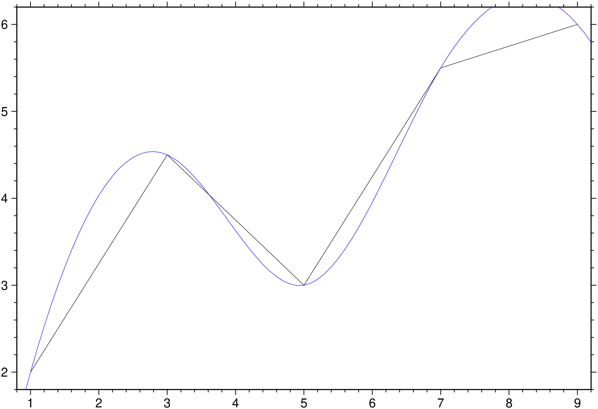
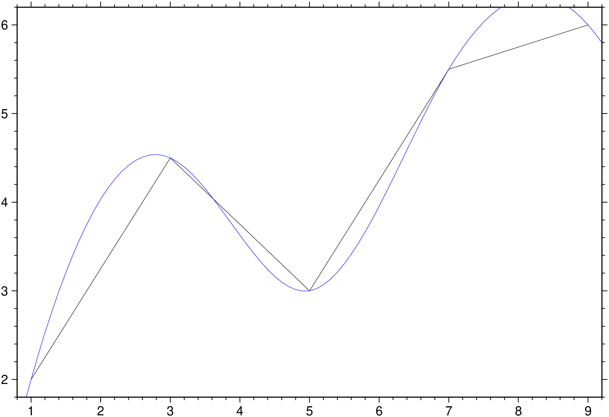

using GMT
# Create sample data
data = [1.0 2.0; 3.0 4.5; 5.0 3.0; 7.0 5.5; 9.0 6.0];
# Minimum curvature spline
result = greenspline(data, region="0/10", inc=0.1, S=:c);
plot(data)
plot!(result, lc=:blue, show=true)
Interpolate using Green’s functions for splines in 1-3 dimensions
(Warning: Manual translate by Claude. Needs revision)
greenspline table [ A | gradient] [ C | approx| approximate ] [ D | metadata | metadata] [ E | misfit] [ G | outgrid | save ] [ I | inc | increment | spacing ] [ L | leave_trend ] [ N | nodes] [ Q | dir_derivative] [ R | region | limits ] [ S | splines ] [ T | mask] [ V | verbose ] [ W | uncertainties] [ Z | mode | distmode ] [ b | binary ] [ d | nodata ] [ e | pattern ] [ f | colinfo ] [ h | header ] [ i | incol | incols ] [ o | outcol | outcols ] [ r | reg | registration ] [ x | cores ] [ : | yx ]
greenspline uses the Green’s function for the chosen spline and geometry to interpolate data at regular or arbitrary output locations. Choose between minimum curvature, regularized, or continuous curvature splines in tension for either 1-D, 2-D, or 3-D Cartesian coordinates or spherical surface coordinates. Mathematically, the solution is composed as a sum of Green’s functions and a trend function. The unknown coefficients are determined by requiring the solution to fit the observed data points exactly or approximately (via SVD).
A or gradient : – gradient=gradfile | gradient=“gradfile+f1”
Append name of file with surface gradients to partly constrain the solution. Use modifier +f to select one of these input formats:
C or approx or approximate : – approx=cutoff | approx=(n=:, mode=:r, cutoff=0.01, file=“eigen.txt”, cumulative=true, incremental=true, dryrun=true)
Find an approximate surface fit using singular value decomposition (SVD) and eliminate contribution from smaller eigenvalues [Default uses Gauss-Jordan elimination for exact fit]. Append a directive:
C=(n=100,))Optional modifiers (use as named tuple members):
D or meta or metadata: – meta=(xname=“…”, yname=“…”, zname=“…”, vname=“…”, …)
Control netCDF grid metadata. Use named tuple with these optional members:
E or misfit : – misfit=true | misfit=“misfitfile” | misfit=(misfitfile=“…”, reportfile=“…”)
Evaluate spline exactly at input data locations and report misfit statistics. If E=true, statistics are written to stderr. If a filename is given, write data table augmented by spline estimate and misfit columns. If C is used with history modifiers, write eigenvalue analysis table instead. Use named tuple for multiple outputs: julia E=(misfitfile="misfit.txt", reportfile="report.txt")
G or outgrid or save : – save=“outfile.grd” | save=“table.txt”
Specify output filename. For 2-D grids, a grid file is required. For 3-D, can be a cube file, a template for multiple 2-D grids (with floating-point format like "layer_%g.grd"), or omitted for ASCII/binary table output. For arbitrary output locations (with N), this specifies the output table name. Ignored if C is specified.
I or inc or increment or spacing : – inc=xinc | inc=(xinc,yinc) | inc=(xinc,yinc,zinc)
Specify equidistant sampling intervals. For 1-D, give xinc; for 2-D, give xinc and yinc; for 3-D, give xinc, yinc, and zinc.
L or leave_trend : – leave_trend=true | leave_trend=:t | leave_trend=:r | leave_trend=:tr
Control detrending and normalization of data prior to solving. Append directives:
Default applies both detrending and normalization when geometrically permissible.
N or nodes : – nodes=“nodefile”
ASCII file with coordinates of desired output locations in the first column(s). The resulting values are appended to each record and written to the file given in G (or stdout).
Q or dir_derivative : – dir_derivative=az | dir_derivative=(x,y,z)
Take directional derivative instead of evaluating solution. For 1-D, give nothing (uses derivative). For 2-D, give azimuth in degrees. For 3-D, give three components of desired vector direction as a tuple; the vector will be normalized.
R or region or limits : – limits=(xmin, xmax, ymin, ymax) | limits=(BB=(xmin, xmax, ymin, ymax),) | limits=(LLUR=(xmin, xmax, ymin, ymax),units=“unit”) | …more
Specify the region of interest. More at [limits](../common_opts/opt_R.html). For perspective view view, optionally add zmin,zmax. This option may be used to indicate the range used for the 3-D axes. You may ask for a larger w/e/s/n region to have more room between the image and the axes.
S oe splines : – splines=:c | splines=:t | splines=(:t, tension) | splines=(:q, tension, params…)
Select spline type. Append directive for spline selection:
For :q, optional modifiers as named tuple:
Example: julia S=(:t, 0.7) # Tension 0.7 S=(:r, 0.95, 50) # Tension 0.95, scale 50 S=(:q, 0.85, limit=1e-8, n=15001) # Spherical with custom parameters
T or mask : – mask=“maskgrid”
For 2-D interpolation only. Evaluate solution only at nodes in maskgrid that are not NaN. This option eliminates the need for R, I, and r.
V or verbose : – verbose=true | verbose=level
Select verbosity level. More at [verbose](../common_opts/opt_V.html)
W or uncertainties : – uncertainties=true | uncertainties=:w
Data one-sigma uncertainties are in the last column. Compute weights inversely proportional to uncertainties squared. Append :w if weights are given directly instead of uncertainties (no squaring). Results in weighted least squares fit. Only has effect with C.
Z or mode or distmode : – distmode=mode
Set distance mode for calculating distances between data points:
bi or binary_in : – binary_in=??
Select native binary format for primary table input. More at
di or nodata_in : – nodata_in=??
Substitute specific values with NaN. More at
e or pattern : – pattern=??
Only accept ASCII data records that contain the specified pattern. More at
f or colinfo : – colinfo=??
Specify the data types of input and/or output columns (time or geographical data). More at
h or header : – header=??
Specify that input and/or output file(s) have n header records. More at
i or incol or incols : – incol=col_num | incol=“opts”
Select input columns and transformations (0 is first column, t is trailing text, append word to read one word only). More at incol
o or outcol : – outcol=??
Select specific data columns for primary output, in arbitrary order. More at
R or region or limits : – limits=(xmin, xmax, ymin, ymax) | limits=(BB=(xmin, xmax, ymin, ymax),) | limits=(LLUR=(xmin, xmax, ymin, ymax),units=“unit”) | …more
Specify the region of interest. More at [limits](../common_opts/opt_R.html). For perspective view view, optionally add zmin,zmax. This option may be used to indicate the range used for the 3-D axes. You may ask for a larger w/e/s/n region to have more room between the image and the axes.
X or xshift or x_offset : xshift=true | xshift=x-shift | xshift=(shift=x-shift, mov=“a|c|f|r”)
Shift plot origin. More at [xshift](../common_opts/opt_X.html)
yx : – yx=true
Swap 1st and 2nd column on input and/or output. More at
Resample 1-D data using minimum curvature spline:

Spline in tension (tension = 0.7):
Create uniform grid using minimum curvature spline:
Spline in tension with mask:
Regularized spline in tension:
Cartesian cubic spline retaining 100 largest eigenvalues:
Evaluate cumulative contributions:
Recover surface from single point value and gradient constraints:
Create 3-D grid from (x,y,z,w) data:
# ASCII table output
result = greenspline("@Table_5_23.txt", region=(5,40,-5,10,5,16),
inc=0.25, S=(:r, 0.85), Z=5)
# Multiple 2-D layer grids
greenspline("@Table_5_23.txt", region=(5,40,-5,10,5,16), inc=0.25,
S=(:r, 0.85), Z=5, save="layer_%g.grd")
# Single 3-D netCDF cube
greenspline("@Table_5_23.txt", region=(5,40,-5,10,5,16), inc=0.25,
S=(:r, 0.85), Z=5, save="cube3d.nc")Global grid using Parker spline:
With tension:
Output at specific coordinates:
Evaluate fit quality:
The solution requires inverting an n × n double precision matrix, where n is the number of data constraints. Memory usage scales as n²: - n = 1,024: ~8 MB - n = 10,240: ~800 MB
Pre-process data with blockmean, blockmedian, or blockmode to avoid aliasing and control n. For spherical data, use gmtspatial nearest neighbor reduction.
For Cartesian cases, free-space Green functions are used, so no boundary conditions apply at domain edges. For specific boundary conditions, consider using surface instead.
The inversion can become unstable when data neighbors are very close compared to the overall data span. Remedies: - Pre-process data by averaging closely spaced neighbors - Use SVD solution (C) and discard smallest eigenvalues
Tension suppresses spurious oscillations from minimum curvature requirement, especially with rapid gradient changes: - Smooth data (e.g., potential fields): Little or no tension needed - Rough data (e.g., topography): Moderate tension typically better
Experiment with a range of values. For regularized spline (S=:r), the scale value has limited stable range—experiment to find valid settings.
Unlike sample1d (which offers traditional splines with standard boundary conditions like natural cubic spline), greenspline’s 1-D spline does not specify boundary conditions at domain ends.
For approximate fits (C), it may be difficult to determine how many eigenvalues to retain. The cumulative and incremental modifiers create solutions for all cutoff selections, allowing animation to explore changes and select appropriate C values. See GMT animations for examples.
The series solution for S=:q (Wessel & Becker, 2008) is slower to compute, so values are pre-calculated and cubic spline interpolation lookup is used. Optional modifiers limit and n control accuracy and performance.
This function has multiple methods:
greenspline(cmd0::String; kwargs...) - greenspline.jl:76greenspline(arg1; kwargs...) - greenspline.jl:77blockmean, blockmedian, blockmode, nearneighbor, sample1d, surface, triangulate